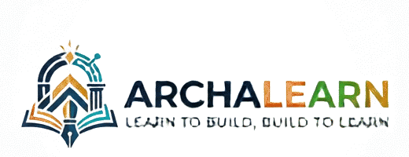

ARCHALEARN // THE ARCHITECTURE OF DUAL RESONANCE
Learn to build, build to learn.
The subject mastered with zero guesswork.
The student mapped with sub-second intuition.
DUAL ENGINE: RESONATING
Scroll to wander